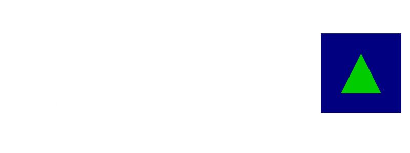
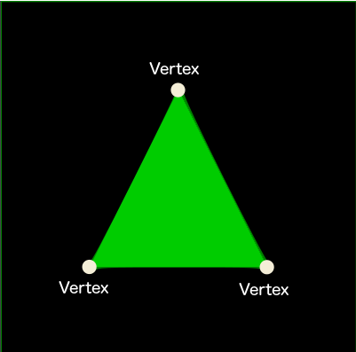

24.09.2015
Eirik Ola Aksnes | Thomas Johansen
<canvas id="myCanvas" width="400" height="400" style="background-color: black;">
Your browser doesn't appear to support the HTML5 <canvas> element.
</canvas>
var canvas = document.getElementById("myCanvas");
var drawingContext = canvas.getContext("2d");
drawingContext.strokeStyle = "#0000FF";
drawingContext.fillStyle = "#00FF00";
drawingContext.lineWidth = 4;
drawingContext.beginPath();
drawingContext.moveTo(250,0);
drawingContext.lineTo(500,500);
drawingContext.lineTo(0,500);
drawingContext.lineTo(250,0);
drawingContext.fill();
drawingContext.stroke();
drawingContext.closePath();
<html>
<head>
<script type="text/javascript">
function draw() {
...
}
</script>
</head>
<body onload="draw()">
<canvas id="canvas" width="500" height="500"></canvas>
</body>
</html>
<html>
<head>
<script type="text/javascript">
function draw() {
var canvas = document.getElementById('canvas');
var gl = canvas.getContext("webgl");
...
}
</script>
</head>
<body onload="draw()">
<canvas id="canvas" width="500" height="500"></canvas>
</body>
</html>
<html>
<head>
<script type="text/javascript">
function draw() {
var canvas = document.getElementById('canvas');
var gl = canvas.getContext("webgl");
gl.clearColor(0, 0, 0.5, 1);
gl.clear(gl.COLOR_BUFFER_BIT); // Call the clear function to set the color
}
</script>
</head>
<body onload="draw()">
<canvas id="canvas" width="500" height="500"></canvas>
</body>
</html>



function createBuffer(gl) {
// Create buffer
var vertexPositionBuffer = gl.createBuffer();
// Activate buffer
gl.bindBuffer(gl.ARRAY_BUFFER, vertexPositionBuffer);
var triangleVertices = [
-0.5, -0.5,
0.5, -0.5,
0.0, 0.5
];
// Copy vertices to buffer (on the GPU)
gl.bufferData(gl.ARRAY_BUFFER, new Float32Array(triangleVertices), gl.STATIC_DRAW);
return vertexPositionBuffer;
}
<script id="vertex" type="x-shader">
attribute vec2 vertexPosition;
void main() {
gl_Position = vec4(vertexPosition, 0, 1); //xyzw
}
</script>
<script id="fragment" type="x-shader">
void main() {
// Just apply the same color (rgba) to every pixel covered by the triangle
gl_FragColor = vec4(0.0, 1.0, 0.0, 1.0);
}
</script>
function createShader(str, type) {
var shader = gl.createShader(type);
gl.shaderSource(shader, str);
gl.compileShader(shader);
return shader;
}
var vertexShader = createShader(document.getElementById("vertex").innerHTML, gl.VERTEX_SHADER);
var fragmentShader = createShader(document.getElementById("fragment").innerHTML, gl.FRAGMENT_SHADER);
function createShaderProgram(vertexShader, fragmentShader) {
// A program consists of a vertex and fragment shader
var program = gl.createProgram();
gl.attachShader(program, vertexShader);
gl.attachShader(program, fragmentShader);
gl.linkProgram(program);
// Set the specified program as the currently active program
gl.useProgram(program);
return program;
}
function vertexShaderAttributes(gl, shaderProgram, vertexPositionBuffer) {
// Make the vertices available to the vertex shaders
shaderProgram.vertexPositionAttrb = gl.getAttribLocation(shaderProgram, 'vertexPosition');
gl.enableVertexAttribArray(shaderProgram.vertexPositionAttrb);
gl.bindBuffer(gl.ARRAY_BUFFER, vertexPositionBuffer);
gl.vertexAttribPointer(shaderProgram.vertexPositionAttrb, 2, gl.FLOAT, false, 0, 0);
}
gl.drawArrays(gl.GL_TRIANGLES, 0, 3);
<html>
<head>
<title>Three.js Visualization</title>
<script src="three.js"></script>
<script>
// Your JavaScript will go here
</script>
</head>
</body><body>
</html>
Contains what to draw
var scene = new THREE.Scene();
Perspective camera
var fieldOfView = 45;
var aspectRatio = window.innerWidth / window.innerHeight;
var zNear = 0.1;
var zFar = 10000;
var camera = new THREE.PerspectiveCamera(fieldOfView, aspectRatio, zNear, zFar);
Create
var renderer = new THREE.WebGLRenderer({ clearColor: 0x0000FF });
renderer.setSize(window.innerWidth, window.innerHeight);
document.body.appendChild(renderer.domElement);
Render the scene with selected camera
renderer.render(scene, camera);
var geometry = new THREE.Geometry();
var vertex1 = new THREE.Vector3(-0.5 ,-0.5, 0);
var vertex2 = new THREE.Vector3(0.5, -0.5, 0);
var vertex3 = new THREE.Vector3(0.0, 0.5, 0);
geometry.vertices.push(vertex1);
geometry.vertices.push(vertex2);
geometry.vertices.push(vertex3);
geometry.faces.push(new THREE.Face3(0, 1, 2 ));
var material = new THREE.MeshBasicMaterial({
color: 0x00FF00
});
var triangle = new THREE.Mesh(geometry, material);
scene.add(triangle);
Torus
var radius = 40;
var tube = 10;
var radialSegments = 50;
var tubularSegments = 50;
var geometry = new THREE.TorusGeometry(radius, tube, radialSegments, tubularSegments);
var material = new THREE.MeshBasicMaterial({
color: 0x0000FF
});
var torus = new THREE.Mesh(geometry, material);
scene.add(torus);
function animate(time) {
// Spin the camera in a circle
camera.position.x = Math.sin(time/1000) * 150;
camera.position.y = 50;
camera.position.z = Math.cos(time/1000) * 150;
// You need to update lookAt every frame (0,0,0)
camera.lookAt(scene.position);
renderer.render(scene, camera);
window.requestAnimationFrame(animate);
}
animate(new Date().getTime());
Because WebGL is programmed in JavaScript, this makes it easier to integrate WebGL applications with other JavaScript libraries such as JQuery UI and with other HTML5 technologies
<link rel="stylesheet" href="jquery-ui-1.10.2.custom/css/smoothness/jquery-ui-1.10.2.custom.css" />
<script src="jquery-ui-1.10.2.custom/js/jquery-1.9.1.js"></script>
<script src="jquery-ui-1.10.2.custom/js/jquery-ui-1.10.2.custom.js"></script>
<div id="colorPicker">
<div id="red"></div>
<div id="green"></div>
<div id="blue"></div>
</div>
#colorPicker {
position: absolute;
left: 10px;
top: 10px;
}
#red, #green, #blue {
float: left;
clear: left;
width: 300px;
margin: 15px;
}
...
$("#red, #green, #blue").slider({
orientation: "horizontal",
range: "min",
max: 255,
value: 127,
slide: setMaterialColor,
change: setMaterialColor
});
$("#red").slider("value", 0);
$("#green").slider("value", 0);
$("#blue").slider("value", 255);
function setMaterialColor() {
var red = $("#red").slider("value");
var green = $("#green").slider("value");
var blue = $("#blue").slider("value");
material.color.r = red / 255;
material.color.g = green / 255;
material.color.b = blue / 255;
}
Spot light (green)
var light = new THREE.SpotLight(0x00DD00);
light.position.set(200, 0, 0);
scene.add(light);
Ambient light (red)
var light = new THREE.AmbientLight(0xDD0000);
scene.add(light);
Load textures
var chromeTexture = THREE.ImageUtils.loadTexture("chrome.png");
var catTexture = THREE.ImageUtils.loadTexture("cat.jpg");
Apply textures
var materialArray = [];
materialArray.push(new THREE.MeshLambertMaterial({map: catTexture}));
materialArray.push(new THREE.MeshLambertMaterial({map: chromeTexture}));
materialArray.push(new THREE.MeshLambertMaterial({map: chromeTexture}));
materialArray.push(new THREE.MeshLambertMaterial({map: chromeTexture}));
materialArray.push(new THREE.MeshLambertMaterial({map: chromeTexture}));
materialArray.push(new THREE.MeshLambertMaterial({map: chromeTexture}));
var cubeGeometry = new THREE.CubeGeometry(50, 50, 50, 1, 1, 1);
var cubeMesh = new THREE.Mesh(cubeGeometry, new THREE.MeshFaceMaterial(materialArray));
scene.add(cubeMesh);
Create 100 000 particles.
var geometry = new THREE.Geometry();
for (var i = 0; i < 100000; i ++) {
var vertex = new THREE.Vector3();
vertex.x = 2000 * Math.random() - 1000;
vertex.y = 2000 * Math.random() - 1000;
vertex.z = 2000 * Math.random() - 1000;
geometry.vertices.push(vertex);
}
material = new THREE.ParticleBasicMaterial({
size: 3,
sizeAttenuation: false,
transparent: true
});
var particles = new THREE.ParticleSystem(geometry, material);
scene.add(particles);
Change colors of particles
function changeColorParticles(time) {
var h = (360 * (1.0 + time * 0.00009) % 360 ) / 360;
material.color.setHSV(h, 1.0, 1.0);
}